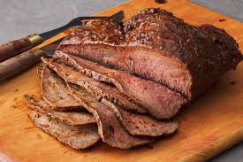

Recipe List
Herb Rubbed Sirloin Tip Roast

Description
This sirloin tip roast is intensely flavored with a homemade herb rub paste that will please
the entire family.
Ingredients
- 1.25 tablespoons paprika
- 1 tablespoon kosher salt
- 1 teaspoon garlic powder
- .5 teaspoon ground black pepper
- .5 teaspoon onion powder
- .5 teaspoon ground cayenne pepper
- .5 teaspoon dried thyme
- 2 tablespoons olive oil
- 1 Sirlion Tip Roast
Directions
- Gather all ingredients.

- Mix paprika, kosher salt, garlic powder, black pepper, onion powder, cayenne pepper, oregano, and thyme in a small bowl.

- Stir in olive oil; allow mixture to sit for about 15 minutes.

- Preheat the oven to 350 degrees F (175 degrees C). Line a baking sheet with aluminum foil.

- Place roast on the prepared baking sheet. Rub spice mixture all over roast.

- Roast in the preheated oven until an instant-read thermometer inserted into the center reads at least 145 degrees F (63 degrees C), about 1 hour.

- Let sit 15 minutes before slicing.